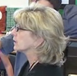
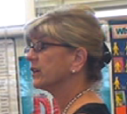
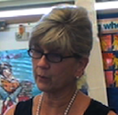

|  |  |  |
Carolyn taught 2nd and 3rd grades for much of her 35-year teaching career. Formerly she was a technology resource teacher and also contributed to the AAAS Benchmarks for Science Literacy. She was awarded the 2009 Elementary Science Teacher of the Year from the San Diego Science Educators' Association.
Carolyn implemented Toy Cars responsively in 2nd and 3rd grade classes. "I was in awe of how much physics the students were able to discuss. Their attention to detail, thinking processes, and communication about their discoveries led to extraordinary group discussions. The students loved the freedom to explore and were so enthusiastic when asked to record their discoveries in their science journals. Using the responsive approach in science became the highlight of the day for both the students and me."